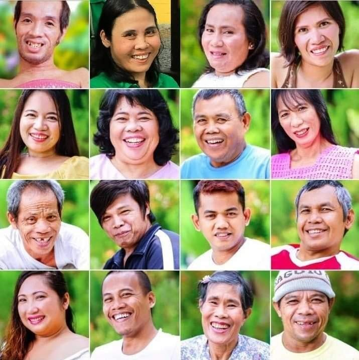
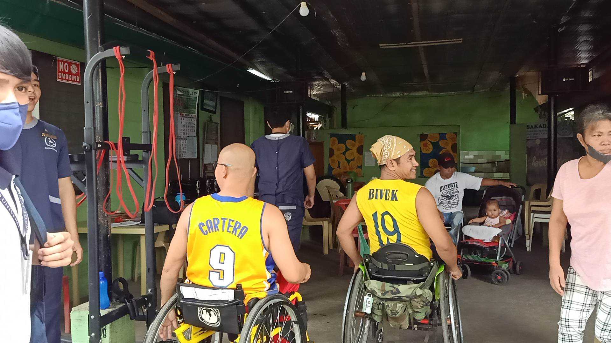
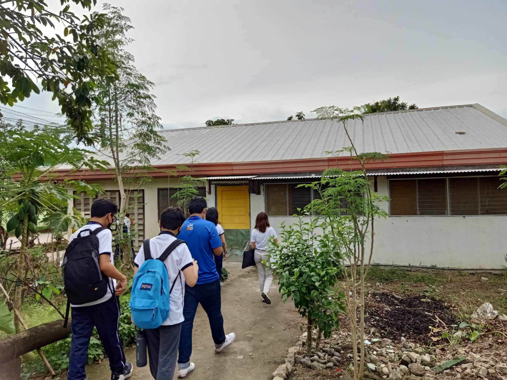
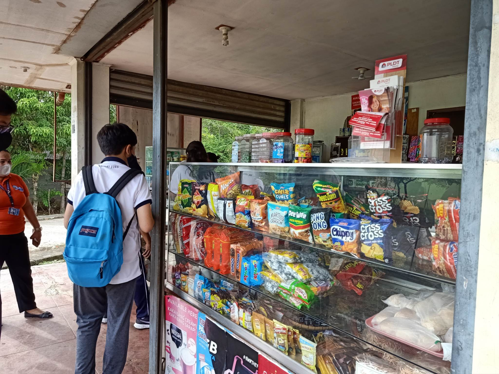
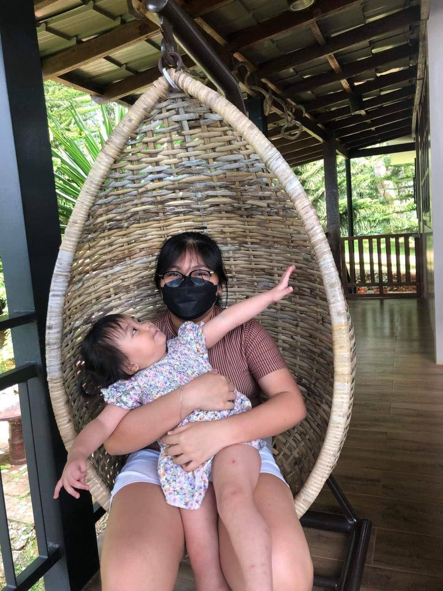

About SAKADAB
SAKADAB's Profile

SAKADAB (Samahan ng mga may iba’t ibang Kapansanan sa Dabaw) is a group/ association that has people with
disabilities. They have skilful people with disabilities with them that are given the opportunity to work
on the skills that they have such as baking, welding, wood craft, handicraft, etc. SAKADAB’s advocacy is to
enhance the quality of living and become self-reliant as people with disabilities. Their goal is to support
one another with their different capabilities. As a community, they do not offer specific programs or services.
Rather, they provide each other with spiritual, moral, and financial support.
General Information
Address: GK Village, Purok 6-b7, Los Amigos, Tugbok Davao City
Contact Person/s: Mr. Ludivico Gicain Mascarinas Jr. (aka Kuya Junix)
Contact Number/s: 0936 569 5586; 0948 540 9815
SAKADAB's Facility
Physical Therapy Center

SAKADAB's facility has a physical therapy center for the beneficiaries to stay physically fit. According to them, this center is not only open to
the beneficiaries alone, but it is also open to their neighbors.
Activities Center

This part of the facility is their activities center. They hold some activities as a community like team building in this part of the facility.
Sari-sari Store

This is SAKADAB's sari-sari store. You can buy a variety of items here. From necessities like soap, shampoo, ingredients for cooking, to wants like
beverages and chips or snacks. This is one of the sources of income has aside from their handicraft products.
About the Web Designer
By: Jamila Fay Lampauog

Jamila Fay M. Lampauog is a student of the
Ateneo de Davao Junior High School. She is the leader of Group 3A from Grade 9 Canisius. She assigns parts for her members to work on and proofreads their work.
She is upbeat and laid back. She likes to play video games and badminton in her spare time.